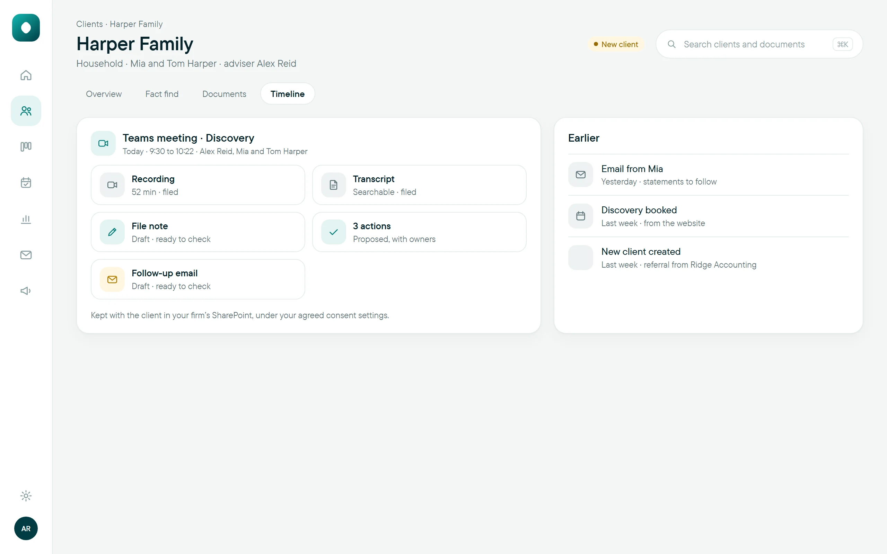
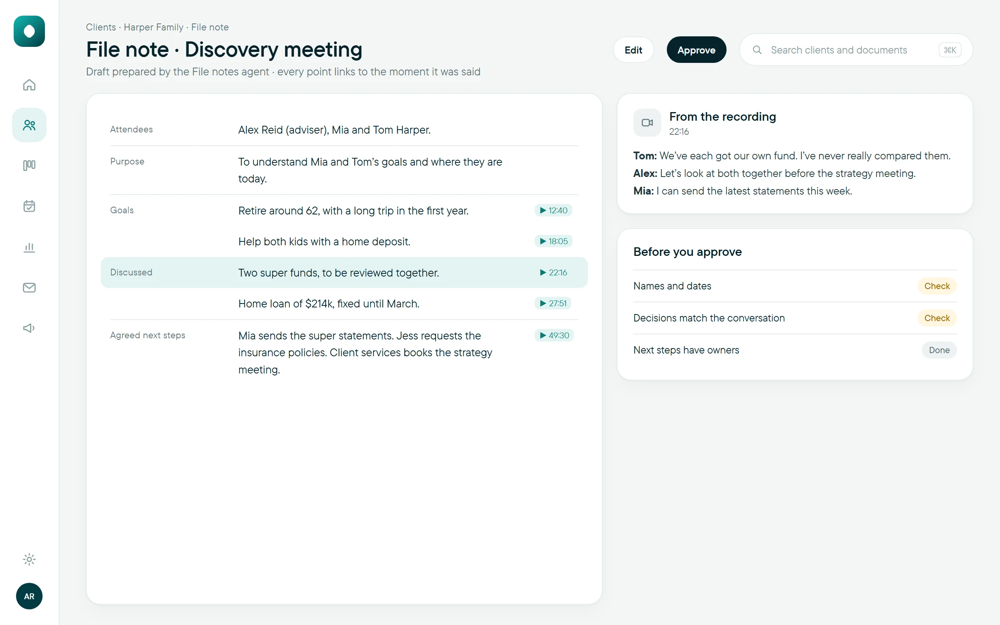
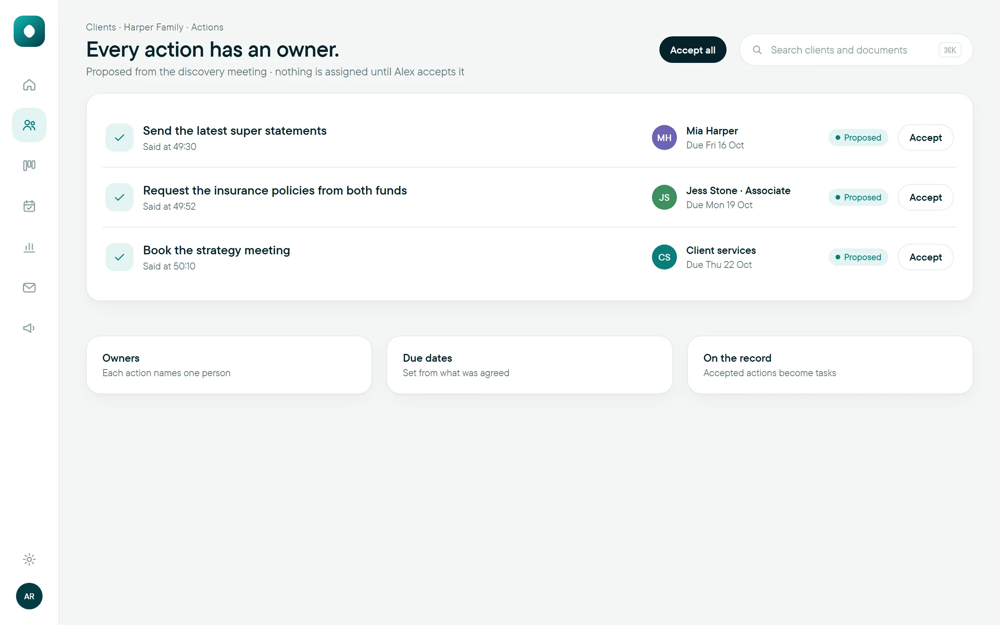
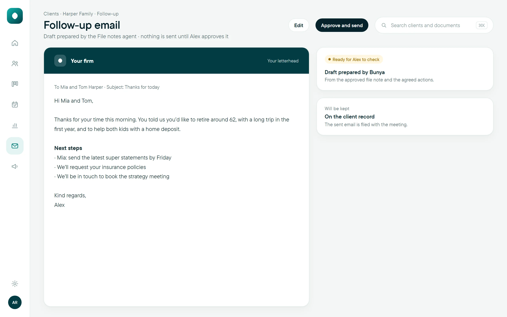

The moment it ends
Prepared from the conversation.
- 01
Recording and transcript, filed.
Kept with the client in your firm’s SharePoint, under your agreed consent settings.

- 02
The file note, drafted.
In your firm’s format, with every point linked to the moment it was said, so checking it takes minutes.

- 03
Every action has an owner.
Proposed from the conversation, each with a named person and a due date. Accepted actions become tasks.

- 04
A follow-up in your voice.
Drafted on your letterhead from the agreed next steps. Nothing is sent until the adviser approves it.
